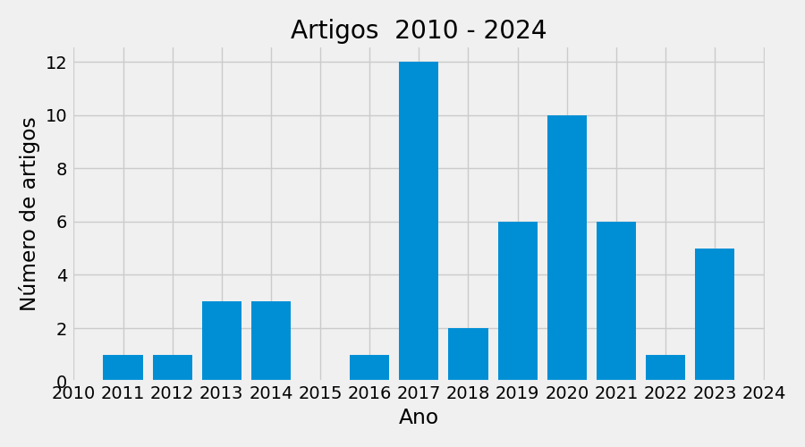
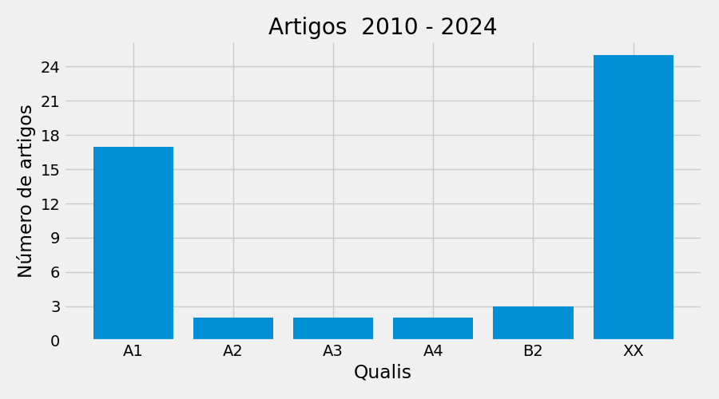

Lattes: http://lattes.cnpq.br/5859946324646438
Última atualização: 15-07-2022
ORCID: https://orcid.org/0000-0001-9633-6622
Lattes: http://lattes.cnpq.br/3275865819287843
Última atualização: 04-09-2024
ORCID: http://orcid.org/0000-0001-8132-4813
Lattes: http://lattes.cnpq.br/5401789813032087
Última atualização: 21-11-2023
ORCID: https://orcid.org/0000-0001-5407-9031

| FULL_NAME | 2011 | 2012 | 2013 | 2014 | 2016 | 2017 | 2018 | 2019 | 2020 | 2021 | 2022 | 2023 | TOTAL | |
|---|---|---|---|---|---|---|---|---|---|---|---|---|---|---|
| 0 | Eduardo Alves Portela Santos | 1 | 1 | 3 | 3 | 1 | 12 | 2 | 6 | 10 | 6 | 1 | 4 | 50 |
| 1 | Pedro Vinícius Eckel Moreira | 0 | 0 | 0 | 0 | 0 | 0 | 0 | 0 | 0 | 0 | 0 | 1 | 1 |
| 2 | Total | 1 | 1 | 3 | 3 | 1 | 12 | 2 | 6 | 10 | 6 | 1 | 5 | 51 |
Nesta secção é apresentada a relação da produção de artigos classificada pelo qualis. Sendo que na Figura e na primeira Tabela, cada publicação é contabilizada para apenas umautor. Na segunda Tabela a mesma publicação é contabilizada para mais de um autor.

| FULL_NAME | A1 | A2 | A3 | A4 | B1 | B2 | B3 | B4 | C | XX | TOTAL | |
|---|---|---|---|---|---|---|---|---|---|---|---|---|
| 0 | Maria Carolina da Silva Andrea | 1 | 0 | 0 | 1 | 2 | 1 | 2 | 2 | 0 | 0 | 9 |
| 1 | Rafael Cesar Tieppo | 1 | 1 | 0 | 5 | 1 | 5 | 2 | 10 | 6 | 0 | 31 |
| 2 | Thiago Libório Romanelli | 12 | 10 | 1 | 1 | 5 | 9 | 0 | 3 | 5 | 5 | 51 |
| 3 | Total | 14 | 11 | 1 | 7 | 8 | 15 | 4 | 15 | 11 | 5 | 91 |
| FULL_NAME | A1 | A2 | A3 | A4 | B1 | B2 | B3 | B4 | C | XX | TOTAL | |
|---|---|---|---|---|---|---|---|---|---|---|---|---|
| 0 | Maria Carolina da Silva Andrea | 1 | 0 | 0 | 1 | 2 | 1 | 2 | 3 | 0 | 0 | 10 |
| 1 | Rafael Cesar Tieppo | 1 | 1 | 1 | 5 | 2 | 6 | 4 | 11 | 6 | 0 | 37 |
| 2 | Thiago Libório Romanelli | 14 | 10 | 1 | 2 | 5 | 11 | 0 | 3 | 5 | 5 | 56 |
Nesta secção é apresentada a relação das orientações concluidas dos pesquisadores. Na primeira Tabela consta um resumo do número de orientações de Mestrado e Doutorado no PG concluídas no período definido. Na segunda Tabela consta a relação de todas as orientações concluídas do pesquisador. Para consultar o nome do orientado e demais detalhes, consulte a produção individual do pesquisador.
| FULL_NAME | TOTAL | |
|---|---|---|
| 0 | Total | 0 |
| FULL_NAME | DOUT | IC | MEST | TCC | TOTAL | |
|---|---|---|---|---|---|---|
| 0 | Eduardo Alves Portela Santos | 12 | 30 | 21 | 3 | 66 |
| 0 | Total | 12 | 30 | 21 | 3 | 66 |
Nesta secção é apresentada a relação das orientações em andamento dos pesquisadores. Na primeira Tabela consta um resumo do número de orientações de Mestrado e Doutorado em andamento no PG. Na segunda Tabela consta a relação de todas as orientações em andamento do pesquisador. Para consultar o nome do orientado e demais detalhes, consulte a produção individual do pesquisador.
| FULL_NAME | TOTAL | |
|---|---|---|
| 0 | Total | 0 |
| FULL_NAME | DOUT | MEST | TOTAL | |
|---|---|---|---|---|
| 0 | Eduardo Alves Portela Santos | 1 | 9 | 10 |
| 0 | Total | 1 | 9 | 10 |
Nesta secção é apresentada a relação da produção individual dos pesquisadores. As produções summarizadas são: Aulas ministradas, projetos de extensão, projetos de pesquisa, livros, capítulos e artigos (contabilizados para mais de um autor.
| INSTITUTION | YI | MI | YI | MF | DEGREE | TYPE | TITLE | |
|---|---|---|---|---|---|---|---|---|
| 0 | Pontifícia Universidade Católica do Paraná | 1996 | 3 | 2024 | nan | Engenharia de Controle e Automação | GRADUACAO | ['Matemática Discreta e Lógica Computacional', 'Sistemas a Eventos Discretos', 'Sistemas Industriais'] |
| 1 | Pontifícia Universidade Católica do Paraná | 2002 | 3 | 2024 | nan | Engenharia de Produção e Sistemas | POS-GRADUACAO | ['Matemática Discreta', 'Sistemas a Eventos Discretos'] |
| 2 | Universidade Federal do Paraná | 2014 | 08 | 2024 | nan | Administração | GRADUACAO | ['Logística de Distribuição', 'Logística de Suprimentos', 'Sistemas de Produção'] |
| NATURE | YEAR | YEAR_FIN | TITLE | NAO | SIM | |
|---|---|---|---|---|---|---|
| 0 | DESENVOLVIMENTO | 2010 | 2024 | Sistema de informação de chão de fábrica: técnicas e ferramentas para auxílio a gestão da manutenção | 0 | 1 |
| 1 | DESENVOLVIMENTO | 2016 | 2017 | Proposição e desenvolvimento de um framework para a melhoria de processos da Renault do Brasil | 0 | 1 |
| 2 | DESENVOLVIMENTO | 2017 | 2018 | Proposição de um programa de melhoria dos processos e base tecnológica da Renault do Brasil com base nos conceitos e requisitos da Indústria 4.0. | 1 | 0 |
| 3 | DESENVOLVIMENTO | 2017 | 2024 | Desenvolvimento de Dimensões de Análise (Analytics) e Decisionais no Gerenciamento de Ativos e Manutenção na Plataforma Manusis 4.0 | 1 | 0 |
| 4 | DESENVOLVIMENTO | 2017 | 2024 | Otimização no Gerenciamento de Ativos e Gerenciamento da Manutenção na Indústria 4.0 | 1 | 0 |
| 5 | DESENVOLVIMENTO | 2017 | 2024 | Project Management Analytics: exploração de técnicas de mineração de dados e processos para a análise de dados históricos de projetos | 1 | 0 |
| 6 | DESENVOLVIMENTO | 2017 | 2024 | Projeto de desenvolvimento de aplicações de monitoramento integradas envolvendo hardware customizável e plataforma de software de supervisão em nuvem | 0 | 1 |
| 7 | DESENVOLVIMENTO | 2018 | 2024 | Proposta de programa para o estudo, desenvolvimento e aplicação de novas tecnologias para o aprimoramento de processos com ênfase na melhoria da qualidade final dos produtos e aumento da eficiência produtiva da Renault do Brasil | 1 | 0 |
| 8 | DESENVOLVIMENTO | 2018 | 2024 | Sistema de Informação para o suporte a gestão de operações e manutenção | 0 | 1 |
| 9 | DESENVOLVIMENTO | 2019 | 2024 | Soluções computacionais para suporte a gerenciamento da manutenção | 0 | 1 |
| 10 | PESQUISA | 2008 | 2013 | Rede de Cooperação Acadêmica em Sistemas a Eventos Discretos, Sistemas Híbridos e Controle Robusto | 1 | 0 |
| 11 | PESQUISA | 2010 | 2022 | Mineração de processos para a análise e diagnóstico de processos de negócio. | 0 | 1 |
| 12 | PESQUISA | 2010 | 2022 | Sistemas de Informação de Chão de Fábrica para o suporte a tomada de decisão na manutenção | 0 | 1 |
| 13 | PESQUISA | 2013 | 2024 | Enterprise Interoperability Assessment - EIA | 1 | 0 |
| 14 | PESQUISA | 2014 | 2022 | Gestão e Organização por Processos - aplicação em Healthcare | 0 | 1 |
| 15 | PESQUISA | 2016 | 2017 | Proposição e desenvolvimento de um framework para a melhoria de processos da Renault do Brasil | 0 | 1 |
| 16 | PESQUISA | 2022 | 2024 | Mineração de Processos em Operações | 0 | 1 |
| 17 | - | - | - | Total | 7 | 10 |
| INSTITUTION | PUPIL | DOUT | IC | MEST | TCC | |
|---|---|---|---|---|---|---|
| 0 | Pontifícia Universidade Católica do Paraná | Alan Fassarella Shunck | 0 | 1 | 0 | 0 |
| 1 | Pontifícia Universidade Católica do Paraná | Alexandre Checoli Choueiri | 1 | 0 | 0 | 0 |
| 2 | Pontifícia Universidade Católica do Paraná | Arthur Maria do Valle | 1 | 0 | 0 | 0 |
| 3 | Pontifícia Universidade Católica do Paraná | Carime Kotekoski | 0 | 2 | 0 | 0 |
| 4 | Pontifícia Universidade Católica do Paraná | Cesar Luiz Rizatti Júnior | 0 | 1 | 0 | 0 |
| 5 | Pontifícia Universidade Católica do Paraná | Cleiton Ferreira dos Santos | 0 | 0 | 1 | 0 |
| 6 | Pontifícia Universidade Católica do Paraná | Danielle Pedrotti Silveira | 0 | 0 | 0 | 1 |
| 7 | Pontifícia Universidade Católica do Paraná | Danilo Orion Valério | 0 | 0 | 1 | 0 |
| 8 | Pontifícia Universidade Católica do Paraná | Deise Cristina Buzzi | 1 | 0 | 1 | 0 |
| 9 | Pontifícia Universidade Católica do Paraná | Deisy Brigid De Zorzi Dalke | 0 | 1 | 0 | 0 |
| 10 | Pontifícia Universidade Católica do Paraná | Edson Ruschel | 1 | 1 | 1 | 0 |
| 11 | Pontifícia Universidade Católica do Paraná | Ewerton Gusthavo Gorski | 0 | 0 | 1 | 0 |
| 12 | Pontifícia Universidade Católica do Paraná | Flavio Piechnicki | 1 | 0 | 0 | 0 |
| 13 | Pontifícia Universidade Católica do Paraná | Flávio Piechnicki | 0 | 0 | 1 | 0 |
| 14 | Pontifícia Universidade Católica do Paraná | Fábio Pegoraro | 1 | 0 | 0 | 0 |
| 15 | Pontifícia Universidade Católica do Paraná | Gabriel Beraldo | 0 | 1 | 0 | 0 |
| 16 | Pontifícia Universidade Católica do Paraná | Gabriela da Silva Dias | 0 | 1 | 0 | 0 |
| 17 | Pontifícia Universidade Católica do Paraná | Giovani Antonio Bordini | 1 | 0 | 0 | 0 |
| 18 | Pontifícia Universidade Católica do Paraná | Giovanni Gonçalves Condado | 0 | 2 | 0 | 0 |
| 19 | Pontifícia Universidade Católica do Paraná | Gustavo Dering Barddal | 0 | 0 | 1 | 1 |
| 20 | Pontifícia Universidade Católica do Paraná | Gustavo Riz | 0 | 0 | 1 | 0 |
| 21 | Pontifícia Universidade Católica do Paraná | Gustavo Yamada Ito | 0 | 0 | 0 | 1 |
| 22 | Pontifícia Universidade Católica do Paraná | Hygor Guilherme Maiorki | 0 | 2 | 0 | 0 |
| 23 | Pontifícia Universidade Católica do Paraná | Hygor Maiorki | 0 | 0 | 1 | 0 |
| 24 | Pontifícia Universidade Católica do Paraná | José Marcelo Almeida Prado Cestari | 1 | 0 | 0 | 0 |
| 25 | Pontifícia Universidade Católica do Paraná | Julia Yumi Maruyama Moura | 0 | 1 | 0 | 0 |
| 26 | Pontifícia Universidade Católica do Paraná | Julio Cesar Battirola Filho | 0 | 0 | 1 | 0 |
| 27 | Pontifícia Universidade Católica do Paraná | Letícia Kist Mantovani | 0 | 1 | 0 | 0 |
| 28 | Pontifícia Universidade Católica do Paraná | Lucas Roberto Ferreira | 0 | 1 | 0 | 0 |
| 29 | Pontifícia Universidade Católica do Paraná | Lícia Cristina Santos | 0 | 0 | 1 | 0 |
| 30 | Pontifícia Universidade Católica do Paraná | Marina Amarante | 0 | 1 | 0 | 0 |
| 31 | Pontifícia Universidade Católica do Paraná | Matheus Weil | 0 | 1 | 0 | 0 |
| 32 | Pontifícia Universidade Católica do Paraná | Osvaldo da Silveira Junior | 0 | 2 | 0 | 0 |
| 33 | Pontifícia Universidade Católica do Paraná | Pedro Gomes | 0 | 0 | 1 | 0 |
| 34 | Pontifícia Universidade Católica do Paraná | Pedro Henrique Bertoldi | 0 | 1 | 0 | 0 |
| 35 | Pontifícia Universidade Católica do Paraná | Rafael Araujo Kluska | 0 | 1 | 0 | 0 |
| 36 | Pontifícia Universidade Católica do Paraná | Ramon Martinez Pereira | 0 | 1 | 0 | 0 |
| 37 | Pontifícia Universidade Católica do Paraná | Reginaldo Borges | 1 | 0 | 0 | 0 |
| 38 | Pontifícia Universidade Católica do Paraná | Ricardo Massao Kagami Zanotto | 0 | 1 | 0 | 0 |
| 39 | Pontifícia Universidade Católica do Paraná | Rodrigo Pierezan | 0 | 0 | 1 | 0 |
| 40 | Pontifícia Universidade Católica do Paraná | Rolando Jacyr Kurscheidt Netto | 1 | 3 | 1 | 0 |
| 41 | Pontifícia Universidade Católica do Paraná | Rosemary Francisco | 0 | 0 | 1 | 0 |
| 42 | Pontifícia Universidade Católica do Paraná | Sauro Schaidt | 1 | 0 | 1 | 0 |
| 43 | Pontifícia Universidade Católica do Paraná | Silvana Pereira Detro | 1 | 0 | 0 | 0 |
| 44 | Pontifícia Universidade Católica do Paraná | Thaiane Regina Portela | 0 | 1 | 0 | 0 |
| 45 | Universidade Federal do Paraná | Adalberto dos Santos | 0 | 0 | 1 | 0 |
| 46 | Universidade Federal do Paraná | Ana Julia Arada Carvalho | 0 | 1 | 0 | 0 |
| 47 | Universidade Federal do Paraná | Daphne Louise Caron de Oliveira | 0 | 1 | 0 | 0 |
| 48 | Universidade Federal do Paraná | Eloisa Freitas | 0 | 0 | 1 | 0 |
| 49 | Universidade Federal do Paraná | Jacira Salete Vieira dos Santos Bernardi | 0 | 0 | 1 | 0 |
| 50 | Universidade Federal do Paraná | João Luis Mayer | 0 | 0 | 1 | 0 |
| 51 | Universidade Federal do Paraná | Lucas Matheus dos Santos | 0 | 1 | 0 | 0 |
| 52 | Universidade Federal do Paraná | Renan Ribeiro do Prado | 0 | 0 | 1 | 0 |
| 0 | Total | - | 12 | 30 | 21 | 3 |
| INSTITUTION | PUPIL | DOUT | MEST | |||||
|---|---|---|---|---|---|---|---|---|
| 0 | Adjustment and evaluation of Cropgro-Soybean and Ceres-Maize for different genetic material in a region of Mato Grosso state, Brazil | TROPICAL AND SUBTROPICAL AGROECOSYSTEMS | 0 | 0 | 0 | 0 | 1 | 0 |
| 1 | Assessment of climate change impact on double-cropping systems | SN Applied Sciences | 0 | 0 | 0 | 0 | 0 | 1 |
| 2 | Effect of Soil Coverage on Dual Crop Coefficient of Maize in a Region of Mato Grosso, Brazil | Journal of Agricultural Science | 0 | 0 | 0 | 0 | 1 | 0 |
| 3 | Energy Demand in Agricultural Biomass Production in Parana state, Brazil | E-journal - CIGR | 0 | 0 | 0 | 1 | 0 | 0 |
| 4 | Energy flows in lowland soybean production system in Brazil | Ciência Rural | 0 | 1 | 0 | 0 | 0 | 0 |
| 5 | Impacts of Future Climate Predictions on Second Season Maize in an Agrosystem on a Biome Transition Region in Mato Grosso State | REVISTA BRASILEIRA DE METEOROLOGIA | 0 | 0 | 1 | 0 | 0 | 0 |
| 6 | Laboratory temperature-compensating calibration procedure for soil water content determination by reflectometry | CIENTIFICA: REVISTA DE AGRONOMIA | 0 | 0 | 0 | 0 | 0 | 1 |
| 7 | Simulação da produtividade e de épocas de semeadura para soja e milho em eventos de El niño Oscilação Sul no estado de Mato Grosso | Acta Iguazu | 0 | 0 | 0 | 0 | 0 | 1 |
| 8 | Suitable weather condition frequency for fungicide soybean application in Tangará da Serra, Mato Grosso, Brazil | REVISTA CERES | 0 | 0 | 1 | 0 | 0 | 0 |
| 9 | Variability and limitations of maize production in Brazil: Potential yield, water-limited yield and yield gaps | AGRICULTURAL SYSTEMS | 1 | 0 | 0 | 0 | 0 | 0 |
| 10 | - | Total | 1 | 1 | 2 | 1 | 2 | 3 |
| INSTITUTION | YI | MI | YI | MF | DEGREE | TYPE | TITLE | |
|---|---|---|---|---|---|---|---|---|
| 0 | Universidade do Estado de Mato Grosso | 2007 | 06 | 2010 | 03 | Agronomia | GRADUACAO | ['Construções Rurais', 'Topografia'] |
| 1 | Universidade do Estado de Mato Grosso | 2010 | 03 | 2011 | 12 | Agronomia | GRADUACAO | ['Cálculo Aplicado', 'Construções Rurais', 'Máquinas e Mecanização Agrícola'] |
| 2 | Universidade do Estado de Mato Grosso | 2015 | 01 | 2015 | 12 | Agronomia | GRADUACAO | ['Máquinas Agrícolas', 'Mecanização Agrícola', 'Desenho técnico'] |
| 3 | Universidade do Estado de Mato Grosso | 2016 | 01 | 2016 | 06 | Agronomia | GRADUACAO | ['Geoprocessamento', 'Máquinas agrícolas', 'Mecanização agrícola'] |
| 4 | Universidade do Estado de Mato Grosso | 2016 | 07 | 2016 | 12 | Agronomia | GRADUACAO | ['Geoprocessamento', 'Mecanização agrícola', 'Máquinas agrícolas'] |
| 5 | Universidade do Estado de Mato Grosso | 2017 | 01 | 2017 | 06 | Agronomia | GRADUACAO | ['Geoprocessamento', 'Máquinas agrícolas', 'Mecanização agrícola'] |
| 6 | Universidade do Estado de Mato Grosso | 2017 | 06 | 2017 | 12 | Agronomia | GRADUACAO | ['Geoprocessamento'] |
| 7 | Universidade do Estado de Mato Grosso | 2018 | 01 | 2018 | 06 | Agronomia | GRADUACAO | ['Geoprocessamento'] |
| 8 | Universidade do Estado de Mato Grosso | 2018 | 07 | 2018 | 12 | Agronomia | GRADUACAO | ['Geoprocessamento'] |
| 9 | Universidade do Estado de Mato Grosso | 2019 | 01 | 2019 | 06 | Agronomia | GRADUACAO | ['Geoprocessamento'] |
| 10 | Universidade do Estado de Mato Grosso | 2019 | 07 | 2019 | 12 | Agronomia | GRADUACAO | ['Geoprocessamento', 'Mecanização agrícola', 'Topografia'] |
| 11 | Universidade do Estado de Mato Grosso | 2020 | 01 | 2020 | 06 | Agronomia | GRADUACAO | ['Geoprocessamento', 'Mecanização agrícola', 'Topografia'] |
| 12 | Universidade do Estado de Mato Grosso | 2020 | 07 | 2020 | 12 | Agronomia | GRADUACAO | ['Geoprocessamento', 'Mecanização agrícola', 'Topografia'] |
| 13 | Universidade do Estado de Mato Grosso | 2021 | 01 | 2021 | 06 | Agronomia | GRADUACAO | ['Geoprocessamento', 'Mecanização agrícola', 'Sensoriamento remoto'] |
| 14 | Universidade do Estado de Mato Grosso | 2021 | 07 | 2021 | 12 | Agronomia | GRADUACAO | ['Geoprocessamento', 'Mecanização agrícola', 'Sensoriamento remoto'] |
| 15 | Universidade do Estado de Mato Grosso | 2022 | 01 | 2022 | 06 | Agronomia | GRADUACAO | ['Geoprocessamento', 'Mecanização agrícola', 'Sensoriamento remoto'] |
| 16 | Universidade do Estado de Mato Grosso | 2022 | 07 | 2022 | 12 | Agronomia | GRADUACAO | ['Geoprocessamento', 'Mecanização agrícola', 'Sensoriamento remoto'] |
| 17 | Universidade do Estado de Mato Grosso | 2023 | 01 | 2023 | 06 | Agronomia | GRADUACAO | ['Sensoriamento remoto'] |
| 18 | Universidade do Estado de Mato Grosso | 2023 | 01 | 2023 | 06 | Ambiente e Sistemas de Produção Agrícola | POS-GRADUACAO | ['Estatística'] |
| 19 | Universidade do Estado de Mato Grosso | 2023 | 07 | 2023 | 12 | Agronomia | GRADUACAO | ['Geoprocessamento'] |
| 20 | Universidade do Estado de Mato Grosso | 2023 | 07 | 2023 | 12 | Ambiente e Sistemas de Produção Agrícola | POS-GRADUACAO | ['Relações Solo, Água, Planta e Atmosfera'] |
| NATURE | YEAR | YEAR_FIN | TITLE | NAO | SIM | |
|---|---|---|---|---|---|---|
| 0 | EXTENSAO | 2007 | 2011 | Otimização do sistema lavoura pecuária na região de Cáceres: | 1 | 0 |
| 1 | EXTENSAO | 2016 | 2018 | Projeto de extensão em Engenharia de Sistemas Agrícolas | 0 | 1 |
| 2 | EXTENSAO | 2018 | 2020 | Geotecnologias aplicadas à mudanças climáticas e agricultura digital - GEOCLIMAT-MT | 0 | 1 |
| 3 | EXTENSAO | 2020 | 2021 | Programa extensão: GeoClima-MT: Difusão de Geotecnologias e Informações Climáticas no Desenvolvimento Regional | 1 | 0 |
| 4 | EXTENSAO | 2020 | 2021 | Projeto de extensão GeoClimaMT - Boeltim, vídeos, cursos e palestras para difusão de conhecimento técnico | 0 | 1 |
| 5 | EXTENSAO | 2022 | 2023 | GeoClimaMT: Centro de acesso a tecnologias para inclusão social | 1 | 0 |
| 6 | EXTENSAO | 2022 | 2023 | GeoClimaMT: Vídeos, Cursos e Palestras para difusão de conhecimento técnico | 0 | 1 |
| 7 | EXTENSAO | 2022 | 2023 | GeoclimaMT: Monitoramento e difusão de informações meteorológicas para o desenvolvimento agroambiental do estado de Mato Grosso | 1 | 0 |
| 8 | EXTENSAO | 2023 | 2024 | GeoClimaMT: Vídeos, Cursos e Palestras para difusão de conhecimento técnico 2023/24 | 0 | 1 |
| 9 | EXTENSAO | 2023 | 2024 | GeoclimaMT: Centro de acesso a tecnologias para inclusão social 2023/24 | 1 | 0 |
| 10 | EXTENSAO | 2023 | 2024 | Mais Ciência: Divulgação Científica e Tecnológica | 1 | 0 |
| 11 | PESQUISA | 2009 | 2011 | Demanda Energetica eViabilidade Tecnica-Economica de Implantação deEnergia Solar para o Processo de Industrialização de Mel de Abelha para a Região De Cáceres/MT | 0 | 1 |
| 12 | PESQUISA | 2010 | 2024 | CETEGEO-SR - Centro Tecnológico de Geoprocessamento e Sensoriamento Remoto aplicado à produção de Biodiesel | 1 | 0 |
| 13 | PESQUISA | 2011 | 2015 | Aplicação e transferência de tecnologias na otimização de sistemas agrícolas sustentáveis | 1 | 0 |
| 14 | PESQUISA | 2012 | 2014 | Diversificação e ampliação da base produtiva do Estado de Grosso, a partir do zoneamento agrícola da soja, feijão, cana-de-açúcar, girassol, crambe e pinhão-manso | 1 | 0 |
| 15 | PESQUISA | 2012 | 2015 | Fluxos de Energia e Custo Operacional de Sistemas Mecanizados na Produção de Grãos | 0 | 1 |
| 16 | PESQUISA | 2013 | 2016 | Diversificação e ampliação da base produtiva da bacia do Alto Paraguai como estratégia inovadora na otimização dos sistemas agrícolas regionais | 1 | 0 |
| 17 | PESQUISA | 2015 | 2017 | Incorporação de energia no ciclo de vida de máquinas agrícolas | 1 | 0 |
| 18 | PESQUISA | 2015 | 2017 | Variabilidade da temperatura e evaporação da água sob diferentes coberturas de solo e sua influência no Kc dual da cultura do milho | 1 | 0 |
| 19 | PESQUISA | 2015 | 2020 | Otimização dos recursos hídricos aplicados a culturas agrícolas no Estado de Mato Grosso - Brasil | 1 | 0 |
| 20 | PESQUISA | 2017 | 2021 | Modelo para predição de dias agronomicamente viáveis para operações agrícolas mecanizadas | 0 | 1 |
| 21 | PESQUISA | 2019 | 2022 | Competição hídrica, variabilidade térmica e influência no Kc Dual do milho em monocultivo e consorciado com crotalária | 1 | 0 |
| 22 | PESQUISA | 2019 | 2024 | Uso de imagens de satélites e variáveis climáticas para estimativa da produtividade da cultura do milho | 0 | 1 |
| 23 | PESQUISA | 2022 | 2024 | Estudo de variáveis climáticas para o planejamento agrícola | 0 | 1 |
| 24 | PESQUISA | 2022 | 2024 | Redução de perdas na produtividade (soja milho) devido a variabilidade climática no Mato Grosso} | 1 | 0 |
| 25 | PESQUISA | 2023 | 2024 | Uso de geotecnologias como suporte no desenvolvimento social, econômico e ambiental | 0 | 1 |
| 26 | - | - | - | Total | 15 | 11 |
| INSTITUTION | PUPIL | IC | MEST | MONO-ESP | OUTRA | TCC | |
|---|---|---|---|---|---|---|---|
| 0 | Fundação de Estudos Agrários Luiz de Queiroz | Michael Ortigara Goulart | 0 | 0 | 1 | 0 | 0 |
| 1 | Universidade do Estado de Mato Grosso | Alice Medeiros Osti | 0 | 1 | 0 | 0 | 0 |
| 2 | Universidade do Estado de Mato Grosso | Bruno Henrique Costa Dantas | 0 | 0 | 0 | 0 | 1 |
| 3 | Universidade do Estado de Mato Grosso | Clayton César Pereira Nunes | 0 | 0 | 0 | 0 | 1 |
| 4 | Universidade do Estado de Mato Grosso | Cristiano Santos | 0 | 0 | 0 | 0 | 1 |
| 5 | Universidade do Estado de Mato Grosso | Daniel Gonçalves Riselo | 0 | 0 | 0 | 0 | 1 |
| 6 | Universidade do Estado de Mato Grosso | Diego Fernando Daniel | 1 | 0 | 0 | 0 | 0 |
| 7 | Universidade do Estado de Mato Grosso | Edgar Ferreira da Silva | 0 | 0 | 0 | 0 | 1 |
| 8 | Universidade do Estado de Mato Grosso | Eduardo Cristofoli Bariviera | 0 | 0 | 0 | 0 | 1 |
| 9 | Universidade do Estado de Mato Grosso | Emili Ferreira Campachi | 2 | 0 | 0 | 0 | 1 |
| 10 | Universidade do Estado de Mato Grosso | Gabriel Vergilio Barboza | 0 | 0 | 0 | 0 | 1 |
| 11 | Universidade do Estado de Mato Grosso | Gabriel Vergílio Barboza | 2 | 0 | 0 | 0 | 0 |
| 12 | Universidade do Estado de Mato Grosso | João Marcos Casagrande | 0 | 0 | 0 | 0 | 1 |
| 13 | Universidade do Estado de Mato Grosso | Leilane Marisa Hunhoff | 0 | 0 | 0 | 0 | 1 |
| 14 | Universidade do Estado de Mato Grosso | Lucas de Freitas Sales | 0 | 0 | 0 | 0 | 1 |
| 15 | Universidade do Estado de Mato Grosso | Marcela Vieira Paulo | 0 | 0 | 0 | 0 | 1 |
| 16 | Universidade do Estado de Mato Grosso | Patrícia Moreira Alves | 0 | 0 | 0 | 1 | 0 |
| 17 | Universidade do Estado de Mato Grosso | Paulo Estevão Custódio do Carmo | 0 | 0 | 0 | 0 | 1 |
| 18 | Universidade do Estado de Mato Grosso | Thiago Garcia Villela | 1 | 0 | 0 | 0 | 0 |
| 19 | Universidade do Estado de Mato Grosso | Vinicius Segabinazi | 0 | 0 | 0 | 0 | 1 |
| 20 | Universidade do Estado de Mato Grosso | Vitor Alfeu Guedes Moreira Vieira | 2 | 0 | 0 | 0 | 1 |
| 0 | Total | - | 8 | 1 | 1 | 1 | 15 |
| YEAR | TITLE | AMOUNT | |
|---|---|---|---|
| 0 | 2012 | Modeling Business Rules for Supervisory Control of Process-Aware Information Systems | 1 |
| 1 | 2013 | Dealing with Constraint-Based Processes: Declare and Supervisory Control Theory | 1 |
| 2 | 2013 | Interoperability Assessment Approaches for Enterprise and Public Administration | 2 |
| 3 | 2013 | Supervision of Constraint-Based Processes: A Declarative Perspective | 1 |
| 4 | 2014 | An Overview of Attributes Characterization for Interoperability Assessment from the Public Administration Perspective | 1 |
| 5 | 2017 | A Bibliometric and Sociometric Study on Healthcare Systems Maturity Models (HSMM) | 1 |
| 6 | 2017 | Dealing with Variability: A Control-Based Configuration of Process Variants | 1 |
| 7 | 2017 | Interoperability Assessment in Health Systems Based on Process Mining and MCDA Methods | 1 |
| 8 | 2017 | Interoperability Assessment in Healthcare Based on the AHP/ANP Methods | 1 |
| 9 | 2017 | Interoperability Frameworks in Public Administration Domain: Focus on Enterprise Assessment | 1 |
| 10 | 2017 | Performance Measurement Systems for Designing and Managing Interoperability Performance Measures: A Literature Analysis | 1 |
| 11 | 2017 | Semantic Interoperability: A Systematic Research Towards Its Requirements | 1 |
| 12 | 2017 | Using Overall Equipment Effectiveness (OEE) to Predict Shutdown Maintenance | 1 |
| 13 | 2018 | Analysis of Interoperability Attributes for Supplier Selection in Supply Chain Segmentation Strategy | 1 |
| 14 | 2018 | Product Lifecycle Management Maturity Models in Industry 4.0 | 1 |
| 15 | 2018 | Short-Term Simulation in Healthcare Management with Support of the Process Mining | 1 |
| 16 | 2019 | Process Mining Applied to Player Interaction and Decision Taking Analysis in Educational Remote Games | 1 |
| 17 | 2021 | Digital Twin and PHM for Optimizing Inventory Levels | 1 |
| 18 | 2021 | Industry 4.0 Technologies for Improving Functional Machinery Safety Management from the Interoperability Point of View in the Automotive Industry | 1 |
| 19 | 2021 | Process Mining and Value Stream Mapping: An Incremental Approach | 1 |
| 20 | 2022 | Decision-Making Support in Stroke Diagnosis Process: An Approach Based on the PROMETHEE Method and Decision Model Notation | 1 |
| 21 | 2023 | A Hybrid Architecture of Digital Twin with Decision Support Layer for Industrial Maintenance | 1 |
| 22 | 2023 | A Merging of Digital Twin and Decision-Making Concepts for Industrial Maintenance | 1 |
| 23 | 2023 | A Review of Maintenance Scheduling Methods in the Context of Industry 4.0 | 1 |
| 24 | 2023 | Development of an Integrative Approach to Operation Quality Management | 1 |
| 25 | 2023 | Joint Industrial Preventive Maintenance and Production Scheduling: A Systematic Literature Review | 1 |
| 26 | - | Total | 27 |
| TITLE | JOURNAL | A1 | A2 | A3 | A4 | B1 | B2 | B3 | B4 | C | |
|---|---|---|---|---|---|---|---|---|---|---|---|
| 0 | AGROCLIMATIC APTITUDE FOR MAIZE CROP IN REGIONS OF MATO GROSSO STATE, BRAZIL | TROPICAL AND SUBTROPICAL AGROECOSYSTEMS | 0 | 0 | 0 | 0 | 0 | 0 | 1 | 0 | 0 |
| 1 | Adjustment and evaluation of cropgro-soybean and ceres-maize for different genetic material in a region of mato grosso state, brazil | TROPICAL AND SUBTROPICAL AGROECOSYSTEMS | 0 | 0 | 0 | 0 | 0 | 0 | 1 | 0 | 0 |
| 2 | Análise temporal da dinâmica da paisagem do município de Denise-Mato Grosso, Brasil | Revista Cerrados | 0 | 0 | 0 | 1 | 0 | 0 | 0 | 0 | 0 |
| 3 | Assessment of climate change impact on double-cropping systems | SN Applied Sciences | 0 | 0 | 0 | 0 | 0 | 0 | 0 | 1 | 0 |
| 4 | Capacidade estática de armazenagem de grãos em Tangará da Serra e microrregião | ESPACIOS (CARACAS) | 0 | 0 | 0 | 0 | 0 | 0 | 0 | 0 | 1 |
| 5 | Concentração de material particulado na região de Tangará da Serra-MT, sul da amazônia legal | Revista Brasileira de Geografia Física | 0 | 1 | 0 | 0 | 0 | 0 | 0 | 0 | 0 |
| 6 | Crotalaria Sowing Times Intercropped with Off-Season Maize in the Variability of Soil Temperature and Moisture | JOURNAL OF AGRICULTURAL STUDIES | 0 | 0 | 0 | 0 | 0 | 0 | 0 | 1 | 0 |
| 7 | Desempenho agronômico de alface americana fertilizada com torta de filtro em ambiente protegido | Horticultura Brasileira (Impresso) | 0 | 0 | 0 | 0 | 0 | 1 | 0 | 0 | 0 |
| 8 | Desenvolvimento de um aparelho alternativo para determinação da estabilidade de agregados via úmida | Scientia Plena | 0 | 0 | 0 | 1 | 0 | 0 | 0 | 0 | 0 |
| 9 | Desenvolvimento de um penetrômetro manual eletrônico | Acta Scientiarum. Technology (Online) | 0 | 0 | 0 | 0 | 0 | 1 | 0 | 0 | 0 |
| 10 | Desenvolvimento inicial de plantas de girassol em condições de estresse hídrico | Enciclopédia biosfera | 0 | 0 | 0 | 0 | 0 | 0 | 0 | 1 | 0 |
| 11 | Distribuição e probabilidade de ocorrência de precipitação em Cáceres (MT) | Pesquisa Agropecuária Tropical (Impresso) | 0 | 0 | 0 | 0 | 0 | 1 | 0 | 0 | 0 |
| 12 | ESTIMATIVA DE PRODUTIVIDADE DA CULTURA DO MILHO SAFRINHA POR IMAGENS DE SATÉLITE LANDSAT 8 | Enciclopedia Biosfera | 0 | 0 | 0 | 0 | 0 | 0 | 0 | 1 | 0 |
| 13 | Effect of Soil Coverage on Dual Crop Coefficient of Maize in a Region of Mato Grosso, Brazil | Journal of Agricultural Science | 0 | 0 | 0 | 0 | 0 | 0 | 1 | 0 | 0 |
| 14 | Effects of the ENSO on the Variability of Precipitation and Air Temperature in Agricultural Regions of Mato Grosso State | Journal of Agricultural Science | 0 | 0 | 0 | 0 | 0 | 0 | 1 | 0 | 0 |
| 15 | Emissão de CO2 e potencial de conservação de C em solo submetido à aplicação de diferentes adubos orgânicos | Agrarian (Dourados. Online) | 0 | 0 | 0 | 0 | 0 | 0 | 0 | 1 | 0 |
| 16 | Energy demand in agricultural biomass production in Parana state, Brazil | E-journal - CIGR | 0 | 0 | 0 | 0 | 0 | 1 | 0 | 0 | 0 |
| 17 | Energy demand in sugarcane residue collection and transportation | E-journal - CIGR | 0 | 0 | 0 | 0 | 0 | 1 | 0 | 0 | 0 |
| 18 | Energy-Based Evaluations on Eucalyptus Biomass Production | International Journal of Forestry Research | 0 | 0 | 1 | 0 | 0 | 0 | 0 | 0 | 0 |
| 19 | Estimativa da capacidade de armazenamento de água no solo para a microrregião da BAP/MT | Revista Ibero-americana de Ciências Ambientais | 0 | 0 | 0 | 0 | 0 | 0 | 0 | 0 | 1 |
| 20 | Evapotranspiração e produtividade de milho safrinha consorciado com crotalária | RESEARCH, SOCIETY AND DEVELOPMENT | 0 | 0 | 0 | 0 | 0 | 0 | 0 | 0 | 1 |
| 21 | Identificação e eliminação de erros em mapas de produtividade de milho obtidos por monitores de colheita | GLOBAL SCIENCE AND TECHNOLOGY | 0 | 0 | 0 | 0 | 0 | 0 | 0 | 1 | 0 |
| 22 | Impacts of Future Climate Predictions on Second Season Maize in an Agrosystem on a Biome Transition Region in Mato Grosso State | REVISTA BRASILEIRA DE METEOROLOGIA | 0 | 0 | 0 | 0 | 1 | 0 | 0 | 0 | 0 |
| 23 | Influência da cobertura de braquiária na temperatura do solo cultivado com milho verde | Acta Iguazu | 0 | 0 | 0 | 0 | 0 | 0 | 0 | 1 | 0 |
| 24 | Laboratory temperature-compensating calibration procedure for soil water content determination by reflectometry | CIENTÍFICA (JABOTICABAL. ONLINE) | 0 | 0 | 0 | 0 | 0 | 0 | 0 | 1 | 0 |
| 25 | Mobility of flumioxazin herbicide in a Dystrophic Red Yellow Latosol at Brazilian Southern Amazon | AUSTRALIAN JOURNAL OF CROP SCIENCE (ONLINE) | 0 | 0 | 0 | 0 | 0 | 1 | 0 | 0 | 0 |
| 26 | Mobility of flumioxazin in argisol at southern Amazon | PERIÓDICO TCHÊ QUÍMICA (MEIO ELETRÔNICO) | 0 | 0 | 0 | 0 | 0 | 0 | 0 | 0 | 1 |
| 27 | Modeling cost and energy demand in agricultural machinery fleets for soybean and maize cultivated using a no-tillage system | COMPUTERS AND ELECTRONICS IN AGRICULTURE | 1 | 0 | 0 | 0 | 0 | 0 | 0 | 0 | 0 |
| 28 | Modelo computacional de predição de dias trabalháveis para semeadura da soja em municípios de Mato Grosso | SCIENTIA PLENA | 0 | 0 | 0 | 1 | 0 | 0 | 0 | 0 | 0 |
| 29 | PRODUCTIVE POTENTIAL OF SECOND GROWING SEASON OF MAIZE IN DIFFERENT SOWING TIMES SUBJECTED TO SUPPLEMENTARY IRRIGATION | REVISTA BRASILEIRA DE MILHO E SORGO (ONLINE) | 0 | 0 | 0 | 0 | 0 | 0 | 0 | 1 | 0 |
| 30 | Produtividade de pepino japonês cultivado sob diferentes níveis de malhas fotoconversoras | Brazilian Journal of Development | 0 | 0 | 0 | 0 | 0 | 0 | 0 | 0 | 1 |
| 31 | Sistema computacional para otimização na seleção de fertilizantes | Scientia Plena | 0 | 0 | 0 | 1 | 0 | 0 | 0 | 0 | 0 |
| 32 | Sowing dates and plant density of peanut cultivars in different soil and climatic conditions of Mato Grosso state, Brazil | International Journal of Food, Agriculture and Environment (Online) | 0 | 0 | 0 | 0 | 0 | 0 | 0 | 0 | 1 |
| 33 | Sowing speed in no tillage system on early development of maize crop | SCIENTIA PLENA | 0 | 0 | 0 | 1 | 0 | 0 | 0 | 0 | 0 |
| 34 | Spatial variability of the ten-day rainfall in the months in which the sowing of soybean and winter corn begins in the state of Mato Grosso | Científica (Jaboticabal. Online) | 0 | 0 | 0 | 0 | 0 | 0 | 0 | 1 | 0 |
| 35 | Use of microlysimeters to determine soil water evaporation as a function of drainage | Italian Journal of Agrometeorology-Rivista Italiana di Agrometeorologia | 0 | 0 | 0 | 0 | 1 | 0 | 0 | 0 | 0 |
| 36 | Variabilidade mensal e sazonal da temperatura do solo em diferentes condições de cobertura e de profundidades na região de Tangará da Serra, Mato Grosso | CIENTÍFICA (JABOTICABAL. ONLINE) | 0 | 0 | 0 | 0 | 0 | 0 | 0 | 1 | 0 |
| 37 | - | Total | 1 | 1 | 1 | 5 | 2 | 6 | 4 | 11 | 6 |
| TITLE | JOURNAL | A1 | A2 | A3 | A4 | B1 | B2 | B4 | C | XX | |
|---|---|---|---|---|---|---|---|---|---|---|---|
| 0 | A cost prediction model for machine operation in multi-field production systems | SCIENTIA AGRICOLA | 0 | 1 | 0 | 0 | 0 | 0 | 0 | 0 | 0 |
| 1 | Agricultural sustainability through agrifood system management | INTERNATIONAL JOURNAL OF AGRICULTURAL MANAGEMENT | 0 | 0 | 0 | 0 | 0 | 1 | 0 | 0 | 0 |
| 2 | Ações extensionistas do Projeto Rondon no município de Rondon do Pará: um olhar sobre as ciências dos alimentos | Revista de Extensão | 0 | 0 | 0 | 0 | 1 | 0 | 0 | 0 | 0 |
| 3 | Biogas and biomethane production routes in the sugar-energy sector: Economic efficiency and carbon footprint | Bioresource Technology Reports | 0 | 0 | 0 | 0 | 1 | 0 | 0 | 0 | 0 |
| 4 | Capacity in mechanical harvesting of sugar cane | SCIENTIA AGRICOLA | 0 | 1 | 0 | 0 | 0 | 0 | 0 | 0 | 0 |
| 5 | Como incorporar as expectativas dos clientes aos serviços de uma concessionária de máquinas agrícolas | Revista Estratégias & Soluções | 0 | 0 | 0 | 0 | 0 | 0 | 0 | 0 | 1 |
| 6 | Conceptual framework to integrate economic drivers of deci-sion-making for technology adoption in agriculture | Engineering Proceedings | 0 | 0 | 0 | 0 | 0 | 0 | 0 | 0 | 1 |
| 7 | Correction to -Water, Energy, and Carbon Footprints of Bioethanol from the US and Brazil- | ENVIRONMENTAL SCIENCE & TECHNOLOGY | 1 | 0 | 0 | 0 | 0 | 0 | 0 | 0 | 0 |
| 8 | Cost of boundary manoeuvres in sugarcane production | Biosystems Engineering | 1 | 0 | 0 | 0 | 0 | 0 | 0 | 0 | 0 |
| 9 | Curvas de desempenho de um trator agrícola com recente inserção no mercado utilizando diferentes proporções de biodiesel | Revista Agrogeoambiental | 0 | 0 | 0 | 0 | 0 | 0 | 1 | 0 | 0 |
| 10 | Economic viability, energy and nutrient balances of site-specific fertilisation for citrus | BIOSYSTEMS ENGINEERING | 1 | 0 | 0 | 0 | 0 | 0 | 0 | 0 | 0 |
| 11 | Embodied energy associated with the materials used in irrigation systems: Drip and centre pivot | Biosystems Engineering | 1 | 0 | 0 | 0 | 0 | 0 | 0 | 0 | 0 |
| 12 | Embodied energy of sugarcane harvesters | BIOSYSTEMS ENGINEERING | 1 | 0 | 0 | 0 | 0 | 0 | 0 | 0 | 0 |
| 13 | Energy Demand and Greenhouse Gases Emissions in the Life Cycle of Coffee Harvesters | CHEMICAL ENGINEERING TRANSACTIONS | 0 | 0 | 0 | 0 | 0 | 1 | 0 | 0 | 0 |
| 14 | Energy analysis of Jatropha curcas under irrigation and rainfed at the Southeast Brazilian humid subtropical | E-JOURNAL - CIGR | 0 | 0 | 0 | 0 | 0 | 1 | 0 | 0 | 0 |
| 15 | Energy and economic performances of stump and roots removal of eucalyptus for bioenergy | BIOMASS & BIOENERGY | 1 | 0 | 0 | 0 | 0 | 0 | 0 | 0 | 0 |
| 16 | Energy assessment for first and second season conventional and transgenic corn | AgriEngineering | 0 | 0 | 0 | 0 | 0 | 0 | 0 | 1 | 0 |
| 17 | Energy assessment for variable rate nitrogen application | E-journal - CIGR | 0 | 0 | 0 | 0 | 0 | 1 | 0 | 0 | 0 |
| 18 | Energy demand and greenhouse gases emissions in the life cycle of tractors | Biosystems Engineering | 1 | 0 | 0 | 0 | 0 | 0 | 0 | 0 | 0 |
| 19 | Energy demand in agricultural biomass production in Parana state, Brazil | E-journal - CIGR | 0 | 0 | 0 | 0 | 0 | 1 | 0 | 0 | 0 |
| 20 | Energy demand in citrus production under varied operational efficiency values | Engenharia Agrícola (Impresso) | 0 | 0 | 0 | 0 | 1 | 0 | 0 | 0 | 0 |
| 21 | Energy demand in sugarcane residue collection and transportation | E-journal - CIGR | 0 | 0 | 0 | 0 | 0 | 1 | 0 | 0 | 0 |
| 22 | Energy efficiency of variable rate fertilizer application in coffee production in Brazil | AgriEngineering | 0 | 0 | 0 | 0 | 0 | 0 | 0 | 1 | 0 |
| 23 | Energy embodiment in Brazilian agriculture: an overview of 23 crops | Scientia Agricola | 0 | 1 | 0 | 0 | 0 | 0 | 0 | 0 | 0 |
| 24 | Energy flow in castor bean (Ricinus communis L.) production systems | Scientia Agrícola (USP. Impresso) | 0 | 1 | 0 | 0 | 0 | 0 | 0 | 0 | 0 |
| 25 | Energy flow in the soybean biodiesel production chain using ethanol as solvent extraction of oil from soybeans | Biomass & Bioenergy | 1 | 0 | 0 | 0 | 0 | 0 | 0 | 0 | 0 |
| 26 | Energy flows in lowland soybean production system in Brazil | Ciência Rural | 0 | 0 | 0 | 1 | 0 | 0 | 0 | 0 | 0 |
| 27 | Energy performance of a production system of eucalyptus | Revista Brasileira de Engenharia Agrícola e Ambiental (Impresso) | 0 | 0 | 0 | 0 | 1 | 0 | 0 | 0 | 0 |
| 28 | Energy performance of different charcoal production systems | Energies | 0 | 1 | 0 | 0 | 0 | 0 | 0 | 0 | 0 |
| 29 | Energy performance of sugarcane potential ethanol production under different management systems | E-JOURNAL - CIGR | 0 | 0 | 0 | 0 | 0 | 1 | 0 | 0 | 0 |
| 30 | Energy, carbon and water footprints on agricultural machinery | BIOSYSTEMS ENGINEERING | 1 | 0 | 0 | 0 | 0 | 0 | 0 | 0 | 0 |
| 31 | Energy, water and material footprints of agricultural machinery industry | E-JOURNAL - CIGR | 0 | 0 | 0 | 0 | 0 | 1 | 0 | 0 | 0 |
| 32 | Energy-Based Evaluations on Eucalyptus Biomass Production | International Journal of Forestry Research | 0 | 0 | 1 | 0 | 0 | 0 | 0 | 0 | 0 |
| 33 | Field phenotyping using multispectral imaging in pea (Pisum sativum L) and chickpea (Cicer arietinum L) | ENGINEERING IN AGRICULTURE, ENVIRONMENT AND FOOD | 0 | 0 | 0 | 1 | 0 | 0 | 0 | 0 | 0 |
| 34 | Hora de cuidar | Cultivar Máquinas | 0 | 0 | 0 | 0 | 0 | 0 | 0 | 1 | 0 |
| 35 | IMPACT OF IRRIGATION AND NITROGEN FERTILIZATION ON THE ENERGY BALANCE AND ENERGY RETURN ON INVESTMENT OF JATROPHA PRODUCTION | Revista brasileira de agricultura irrigada | 0 | 0 | 0 | 0 | 0 | 0 | 1 | 0 | 0 |
| 36 | Impact of ENSO-related rainfall variability on soybean yield in the state of Rio Grande do Sul, Brazil | Agrometeoros | 0 | 0 | 0 | 0 | 0 | 0 | 1 | 0 | 0 |
| 37 | In memoriam of Paulo Cesar Sentelhas | SCIENTIA AGRICOLA | 0 | 1 | 0 | 0 | 0 | 0 | 0 | 0 | 0 |
| 38 | Indicadores de desempenho para a gestão dos processos operacionais citrícolas | Brazilian Journal of Development | 0 | 0 | 0 | 0 | 0 | 0 | 0 | 1 | 0 |
| 39 | Machinery Management as an Environmental Tool - Material Embodiment in Agriculture | E-journal - CIGR | 0 | 0 | 0 | 0 | 0 | 1 | 0 | 0 | 0 |
| 40 | Material and energy demand in actual and suggested maintenance of sugarcane harvesters | INTERNATIONAL JOURNAL OF AGRICULTURAL MANAGEMENT | 0 | 0 | 0 | 0 | 0 | 1 | 0 | 0 | 0 |
| 41 | Material embodiment and energy flows as efficiency indicators of soybean (Glycine max) production in Brazil | Engenharia Agrícola (Impresso) | 0 | 0 | 0 | 0 | 1 | 0 | 0 | 0 | 0 |
| 42 | Material flow determination through agricultural machinery management | Scientia Agrícola (USP. Impresso) | 0 | 1 | 0 | 0 | 0 | 0 | 0 | 0 | 0 |
| 43 | Mecanización del cultivo de la caña de azúcar | Agrotécnica (Madrid) | 0 | 0 | 0 | 0 | 0 | 0 | 0 | 0 | 1 |
| 44 | Mitigation of greenhouse gas emissions using exergy | JOURNAL OF CLEANER PRODUCTION | 1 | 0 | 0 | 0 | 0 | 0 | 0 | 0 | 0 |
| 45 | Modeling cost and energy demand in agricultural machinery fleets for soybean and maize cultivated using a no-tillage system | COMPUTERS AND ELECTRONICS IN AGRICULTURE | 1 | 0 | 0 | 0 | 0 | 0 | 0 | 0 | 0 |
| 46 | Monitoring performance indicators of mechanized agricultural operations through a systemic method | SCIENTIA AGRICOLA | 0 | 1 | 0 | 0 | 0 | 0 | 0 | 0 | 0 |
| 47 | Procedimento e treinamento - uma dupla para padronizar a rotina e eliminar desperdícios | Revista Estratégias & Soluções | 0 | 0 | 0 | 0 | 0 | 0 | 0 | 0 | 1 |
| 48 | Quality planning of silvicultural operations in eucalyptus in Brazil | SCIENTIA FORESTALIS | 0 | 0 | 0 | 0 | 0 | 1 | 0 | 0 | 0 |
| 49 | Sustainability performance through technology adoption: a study case of land leveling in paddy field | Agronomy-Basel | 0 | 1 | 0 | 0 | 0 | 0 | 0 | 0 | 0 |
| 50 | Technical requirements of a convenience food to meet the demands of a customer segment | Quaestum | 0 | 0 | 0 | 0 | 0 | 0 | 0 | 0 | 1 |
| 51 | Triple-bottom-line assessment of São Paulo state's sugarcane production based on a Brazilian multi-regional input-output matrix | RENEWABLE & SUSTAINABLE ENERGY REVIEWS | 1 | 0 | 0 | 0 | 0 | 0 | 0 | 0 | 0 |
| 52 | Usados de valor | Cultivar Máquinas | 0 | 0 | 0 | 0 | 0 | 0 | 0 | 1 | 0 |
| 53 | Variability and limitations of maize production in Brazil: Potential yield, water-limited yield and yield gaps | AGRICULTURAL SYSTEMS | 1 | 0 | 0 | 0 | 0 | 0 | 0 | 0 | 0 |
| 54 | Water and carbon footprint of biomass production assets: drip and centre pivot irrigation systems | Sustainability | 0 | 1 | 0 | 0 | 0 | 0 | 0 | 0 | 0 |
| 55 | Water, Energy, and Carbon Footprints of Bio-ethanol from the US and Brazil | ENVIRONMENTAL SCIENCE & TECHNOLOGY | 1 | 0 | 0 | 0 | 0 | 0 | 0 | 0 | 0 |
| 56 | - | Total | 14 | 10 | 1 | 2 | 5 | 11 | 3 | 5 | 5 |
O índice H é um valor baseado sobre a relação daprodução ordenada em função do número de citações decada artigo em ordem descrescente para cada pesquisador.O índice H siginifica que há h artigos e que cada um deles foi citado pelo menos h vezes. Ou seja, o índice H nunca será maior que o número de artigos publicados pelo pesquisador. Dessa forma, o índice H associa a qualidade e quantidade dos produtos do pesquisador.
A base utilizada para estes estudo foi a Web of Science (apps-webofknowledge)
AVISOS:qualis_agrarias_periodicos_2020.csv